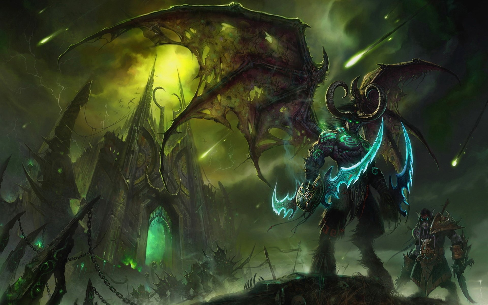

Illidan Stormrage
Illidan, also known as the Betrayer, was the twin brother of Malfurion Stormrage. He was a practitioner of Highborne magic. In his youth, he attempted to master the druidic forces as his brother had, but the sorcery called to him in a way that the magic of the land did not. Unlike his brother, Illidan was born with amber eyes; which was regarded by the elves as a sign of a great destiny— however, this actually indicated inherent druidic potential.[11] While Malfurion and Tyrande had found their destiny, Illidan was still searching for his. Though not a Highborne himself, he became the personal caster of the military leader, Ravencrest.
When Sargeras' invasion of Azeroth had begun and Azshara's treachery became known, Malfurion convinced Illidan to leave his queen. Illidan followed his brother. However, as Cenarius and the dragons entered the battle, Malfurion came to understand that their adversaries were too powerful to fall in combat. To end the invasion, Malfurion plotted to destroy of the Well of Eternity, which appalled Illidan. The Well was the source of his magic— and likely of the elves' immortality as well, and its loss was a price far too dear for Illidan to pay. In addition, the night elf found that he increasingly admired the powers of the Burning Legion, seeing a magical purity that underlay their chaotic behavior. While the night elves struggled to maintain their ground, the Burning Legion's numbers did not seem to permanently diminish. The satyr Xavius seized upon Illidan's doubts, exploiting his confusion, and planting seeds of distrust into his mind. This led Illidan to seek out the power the Burning Legion was using so he could become stronger. While he felt in his mind that he was seeking this power to help defeat the Burning Legion, he actually helped them by giving Sargeras the Demon Soul which allowed them to open the portal.
Illidan had strong feelings for Tyrande Whisperwind, a novice priestess in the Sisters of Elune. Illidan so desired to impress Tyrande that he often acted without thinking, particularly in magic; he never realized that these displays weren't quite what the priestess was looking for in a mate. But while Illidan struggled to win her heart, none of them realized that the battle was over soon after it had begun; Tyrande had chosen Malfurion almost from the beginning. Xavius knew of this and used this to darken Illidan's thoughts, convincing him that if Malfurion were to die, Illidan would no longer have a rival for Tyrande's love. Finally, the sight of Tyrande in the arms of his brother, Malfurion, shattered his final ties to the defenders.
After the Great Sundering, Illidan, who had filled seven vials with water from the Well of Eternity, scaled the peaks of Mount Hyjal, where he found a small, tranquil lake. There, he poured the contents of three of the vials into the waters. The chaotic energies quickly manifested, tainting the lake and twisting it into a new Well of Eternity. Illidan's joy was short-lived, however, when his brother, Malfurion, Tyrande and the rest of the kaldorei leadership discovered him- and all were horrified at what he'd done. Unable to accept that his brother had committed such treachery, Malfurion tried again to explain to Illidan the folly of his ways. The magic, he insisted, was chaotic by nature and it could only bring about destruction so long as it existed. Illidan refused to listen, so enraptured by the magic's power that his brother seemed to him an unknowing fool. Illidan claimed that magic would be needed should the Burning Legion ever return. The lack of remorse shook Malfurion to his core and he raged at his brother, understanding now that Illidan was lost forever to the magic's sway. He ordered him imprisoned deep below Hyjal in a jail kept far from sight and mind.